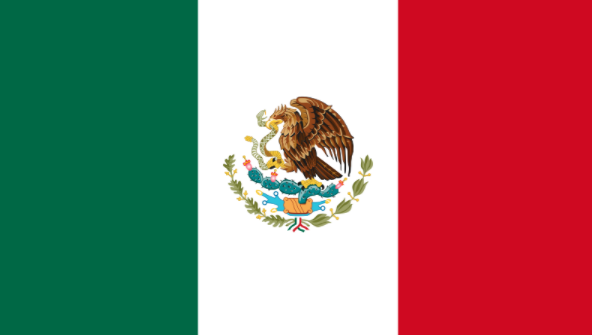

L'histoire du football rend compte de la naissance et de l'évolution du football, un sport collectif né au milieu du xixe siècle en Grande-Bretagne et devenu au siècle suivant le plus populaire au monde.
Les racines que ce sport partage avec d'autres jeux de « football » remontent au Moyen Âge. Il est l'héritier de la soule médiévale, pratiqué notamment dans le Nord-Ouest de la France et dans les Îles Britanniques, et du Calcio florentin, des jeux caractérisés par leur violence et leur peu de règles.
Au début du xixe siècle, les écoles anglaises intègrent progressivement le sport à leur cursus et impulsent sa formalisation. Les règles de Cambridge sont en octobre 1848 une première tentative d'unification des règles du football. Les premiers clubs indépendants apparaissent à la fin des années 1800 ; en 1863, onze d'entre eux fondent the Football Association, chargée d'organiser la pratique du football en Angleterre. Elle publie peu après les premières « Lois du jeu » (en anglais : Laws of the Game), largement inspirées par celles de Cambridge.
Dès lors, le football connait une progression continue dans sa pratique. En 1885, le professionnalisme est autorisé en Grande-Bretagne, tandis que les premiers clubs sont créés à travers le monde, particulièrement en Europe et en Amérique du Sud. La Fédération internationale de football association (FIFA) est fondée en 1904 à Paris par des représentants de sept pays européens. Encouragée par le succès populaire rencontré par les tournois de football aux Jeux olympiques, la FIFA organise en 1930 la première édition de la Coupe du monde, qui devient un des principaux événements sportifs planétaires.
Un joueur qui commet une faute reçoit un carton jaune. S’il commet une faute particulièrement grave ou qu’il reçoit un carton jaune pour la deuxième fois,
il reçoit un carton rouge. Un carton rouge entraîne l’expulsion du joueur qui n’est pas remplacé. Son équipe joue alors en infériorité numérique.
Si un ballon sort du terrain derrière la ligne des buts, il existe deux cas de figure. Soit le dernier joueur à l’avoir touché est un membre de l’équipe qui défend
(l’action se passe donc devant son propre but). Dans ce cas, il s’agit d’un corner et un attaquant de l’équipe adverse peut dégager le ballon depuis le coin le plus proche du terrain.
Si le dernier joueur à avoir touché le ballon est un membre de l’équipe qui attaque (l’action se passe donc devant le but de l’autre équipe), il s’agit d’un dégagement des six mètres.
Un défenseur de l’équipe adverse peut alors dégager le ballon depuis la surface des buts.
Le coup franc est une réparation accordée à l’équipe qui a subi une faute, par exemple si un de ses joueurs a subi un croche-pied, si un joueur touche le ballon avec la main ou en cas de hors-jeu. Le ballon est alors posé au plus près de là où a été commise la faute et un joueur de l’équipe adverse peut le dégager. L’arbitre peut accorder deux sortes de coups francs en fonction de la gravité de la faute: le coup franc direct ou indirect. En cas de coup franc direct, le joueur peut directement essayer de tirer dans les buts. En cas de coup franc indirect: le joueur ne peut pas directement tirer dans les buts. Il doit faire une passe
Un joueur est hors-jeu si, quand on lui passe le ballon, il est plus près du but que le dernier défenseur adverse. Cette règle a été mise en place pour éviter que des joueurs fassent la «carotte», c’est-à-dire qu’ils restent plantés à côté du but adverse en attendant qu’on leur passe le ballon. La situation de hors-jeu n’existe que lorsque le joueur reçoit le ballon depuis l’arrière. S’il court derrière le ballon, il peut se diriger vers le but adverse sans se soucier de l’emplacement de ses adversaires.
Un penalty est accordé à l’équipe qui attaque lorsqu’elle est victime d’une faute dans la surface de réparation. Dans ce cas, le ballon est posé sur le point peint face au but dans la surface de réparation. Tous les autres joueurs restent en arrière. Seul le gardien peut arrêter un penalty.
| Editions | Ville | Médaille d'Or | Médaille d'Argent | Médaille de Bronze |
|---|---|---|---|---|
| Jeux Olympique 1996 | Atlanta | Nigeria |  Argentine Argentine |
 Brésil Brésil |
| Jeux Olympique 2000 | Sydney |  Cameroun Cameroun |
 Espagne Espagne |
 Chili Chili |
| Jeux Olympique 2004 | Athènes | Argentine |
 Paraguay Paraguay |
 Italie Italie |
| Jeux Olympique 2008 | Pékin | Argentine | Nigeria | Brésil |
| Jeux Olympique 2012 | Londres |  Mexique | Brésil |  Corée du sud Corée du sud |
| Jeux Olympique 2016 | Rio de Janeiro | Brésil | Allemagne | Nigeria |
| Jeux Olympique 2020 | Tokyo | Brésil | Espagne | Mexique |
| Editions | Ville | Médaille d'Or | Médaille d'Argent | Médaille de Bronze |
|---|---|---|---|---|
| Jeux Olympique 1996 | Atlanta |  Etats-Unis Etats-Unis |
 Chine Chine |
 Norvège Norvège |
| Jeux Olympique 2000 | Sydney | Norvège |
Etats-Unis |  Allemagne Allemagne |
| Jeux Olympique 2004 | Athène | Etats-Unis | Brésil | Allemagne |
| Jeux Olympique 2008 | Pékin | Etats-Unis | Bresil | Allemagne |
| Jeux Olympique 2012 | Londres | Etats-Unis | Japon | Canada |
| Jeux Olympique 2016 | Rio de Janeiro | Allemagne |  Suède Suède |
Canada |
| Jeux Olympique 2020 | Tokyo | Canada | Suède |
Etats-Unis |